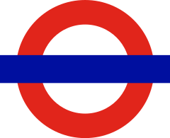
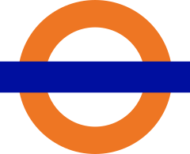
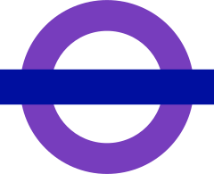

1923
1924
1925
1926
1927
1928
1929
1930
1931
1932
1933
1934
1935
1936
1937
1938
1939
1940
1941
1942
1943
1944
1945
1946
1947
1948
1949
1950
1951
1952
1953
1954
1955
1956
1957
1958
1959
1960
1961
1962
1963
1964
1965
1966
1967
1968
1969
1970
1971
1972
1973
1974
1975
1976
1977
1978
1979
1980
1981
1982
1983
1984
1985
1986
1987
1988
1989
1990
1991
1992
1993
1994
1995
1996
1997
1998
1999
2000
2001
2002
2003
2004
2005
2006
2007
2008
2009
2010
2011
2012
2013
2014
2015
2016
2017
2018
2019
2020
2021
2022
2023
2024
G Stock

Standard Stock
K Stock
L Stock
M Stock
N Stock
403
1935 Stock
401
404
1938 Stock
O Stock
402
503
502
P Stock
Q38 Stock
487
405
402 (steel)
306
R Stock
506
Mark 1
415/1
416/1
307
415/2
416/2
129
501
101
105
114
411
100
1956 Stock
103
104
414/2
109
111
116
201
202
204
205
203
414/1
120
119
108
125
302
410 and 412
112
113
117
122
126
127
128
Blue Pullman
1959 Stock
303
305
308
419
504
107
115
118
121
124
304
1960 Stock
A60 and A62 Stock
110
207
309
1962 Stock
123
206
Mark 2
421
310
311
438
432
423
485 and 486
1967 Stock
418
C69 Stock
C77 Stock
445 & 446
1972 Stock
1973 Stock
Mark 3A
HST
312
313

507
508
D78 Stock
314
370
140
315

1983 Stock
317
210
413
455
141
150
142
143
151
318
144
155
156
319
321
158
Mark 4
483
230
484